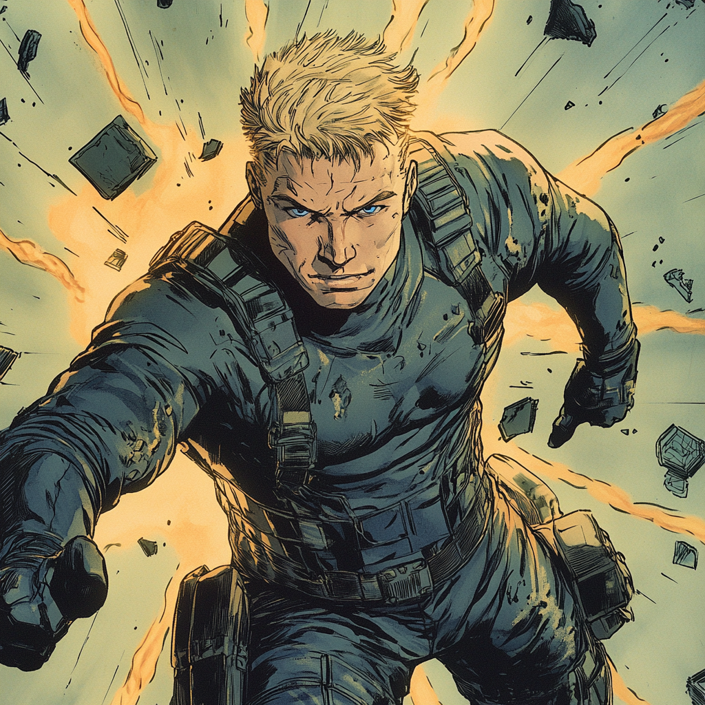

Birth of a Betrayer

The Making of a Mastermind
Born John Marcus Drake in 1982 to a middle-class family in Arlington, Virginia, his father worked as a mid-level State Department analyst while his mother taught high school chemistry. His telekinetic abilities manifested at age seven during a schoolyard fight - he unconsciously deflected a punch from a bully. That night, his mother sat him down and made him promise to never reveal his powers, fearing government intervention.
Early Years
Drake excelled academically while carefully hiding his abilities. He learned control through secret practice, moving coins and papers when alone. His father's stories about government operations fascinated him, particularly tales of Cold War espionage and double agents. He developed an early understanding that real power lay in information and secrets, not just physical force.
By high school, Drake could manipulate objects with microscopic precision. He used his abilities subtly - adjusting dice rolls, guiding pool shots, ensuring coin flips went his way. This taught him the value of restraint and misdirection. He graduated valedictorian and entered Georgetown University's School of Foreign Service.
The Agency Years
The CIA recruited Drake directly out of Georgetown in 2004. His psychological profile showed high intelligence combined with strong compartmentalization abilities - perfect for intelligence work. His powers gave him an edge in training, though he never used them overtly. He could maintain perfect stillness in surveillance, enhance his hearing by manipulating air pressure, and even influence polygraph tests.
Drake rose quickly through analyst ranks before transitioning to field operations. His handlers noted his exceptional ability to acquire information from seemingly secure locations. In reality, he used telekinesis to access safes, copy documents, and plant listening devices without leaving traces.
The Turn
Three events in 2012 changed Drake's worldview forever:
1. He discovered classified files about government mutant containment protocols
2. He witnessed the arrest and disappearance of a young mutant agent
3. He made contact with a Soviet defector who revealed the existence of secret Soviet mutant programs
Drake began questioning his loyalty to a system that feared and controlled people like him. He reached out to foreign intelligence services, offering information in exchange for data about their mutant programs. His telekinetic abilities made him the perfect spy - he could steal documents without entering rooms and listen to conversations through walls.
Building the Network
By 2014, Drake worked with multiple foreign agencies while maintaining his CIA cover. He used this access to identify and track other mutants, particularly telekinetics. He saw himself as a liberator, helping these "assets" escape government control. Some he recruited directly, others he helped disappear into civilian life, building a network of loyal mutants who owed him their freedom.
The Fall
His exposure came in late 2018 through simple bad luck - a routine operation in Berlin recovered Soviet documents mentioning a highly-placed American asset with unusual abilities. The CIA's internal investigation moved quickly. Drake detected the surveillance and knew his time was limited.
Rather than run immediately, he spent two weeks using his access to systematically destroy evidence, plant false leads, and secure resources for his escape. When the CIA finally moved to arrest him, he staged a dramatic exit - using his powers openly for the first time to destroy pursuit vehicles and deflect bullets.
Becoming Bester
Taking the name "Bester" (presumably after the author Alfred Bester who wrote about psychic powers), he continued building his criminal organization. He focused on recruiting young telekinetics, offering them training and purpose. His intelligence background helped him establish a sophisticated operation spanning legitimate businesses and criminal enterprises.
Bester's ultimate goal evolved beyond simple profit or revenge. He envisioned creating a power base of enhanced telekinetics who could operate openly, no longer hiding their abilities. This led him to track Dr. Wasser's research, seeing it as a way to both enhance existing powers and potentially activate latent abilities in others.
Present Day
Bester operates like a sophisticated intelligence agency rather than a typical criminal organization. His telekinetic recruits undergo extensive training in both powers and tradecraft. He maintains multiple legitimate business fronts, including research facilities and security companies. His operations emphasize precision and preparation over brute force.
He sees himself as a revolutionary rather than a criminal, working to ensure mutants - particularly telekinetics - take their rightful place in society. This makes him especially dangerous as he can justify extreme actions in service of his greater cause. The potential of Dr. Wasser's research represents a chance to create more telekinetics and enhance existing ones, potentially tipping the balance of power permanently.
Personality and Methods
Bester maintains the disciplined personality of an intelligence officer. He plans meticulously, maintains multiple contingencies, and prefers subtle manipulation to overt force. His years of undercover work taught him patience and the value of appearing unremarkable. Despite his powers, he often resolves situations through careful planning rather than direct confrontation.